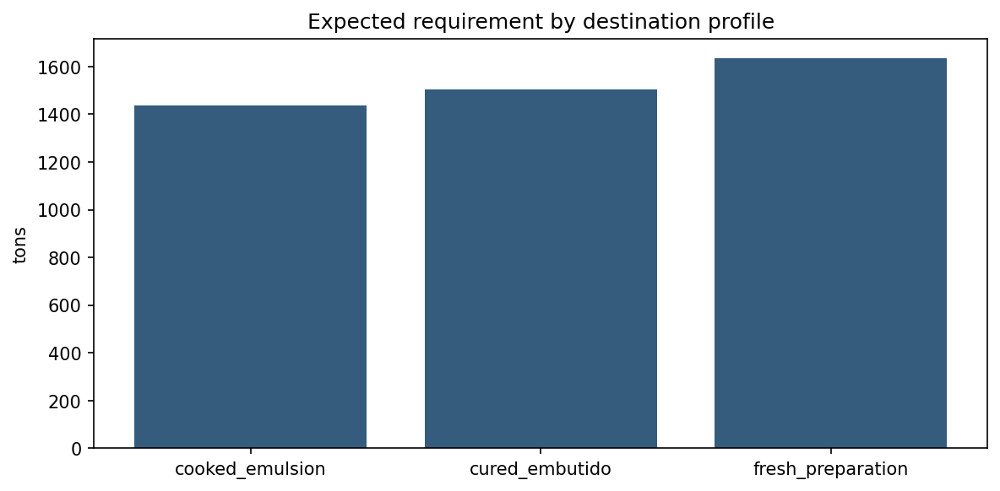
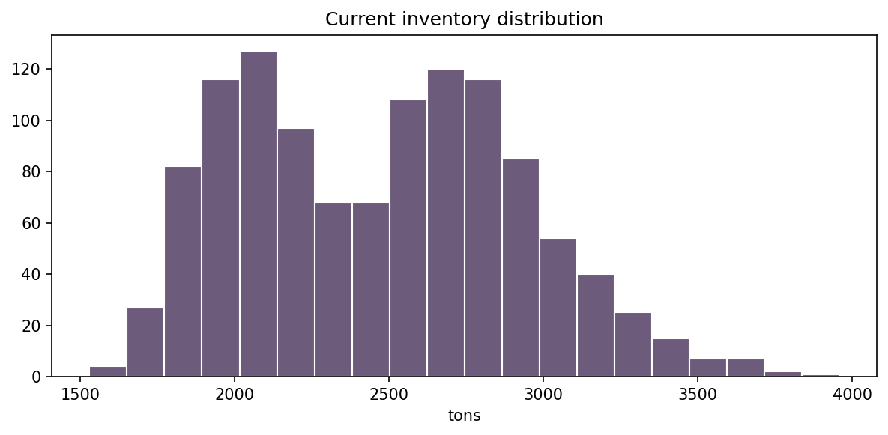
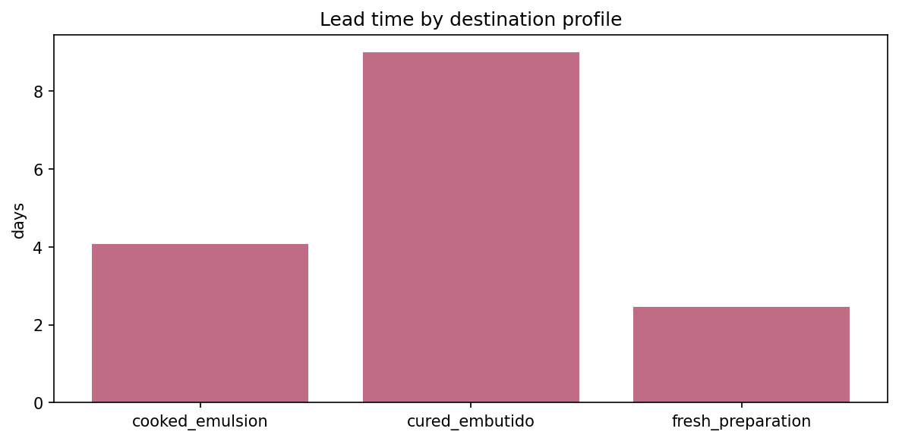
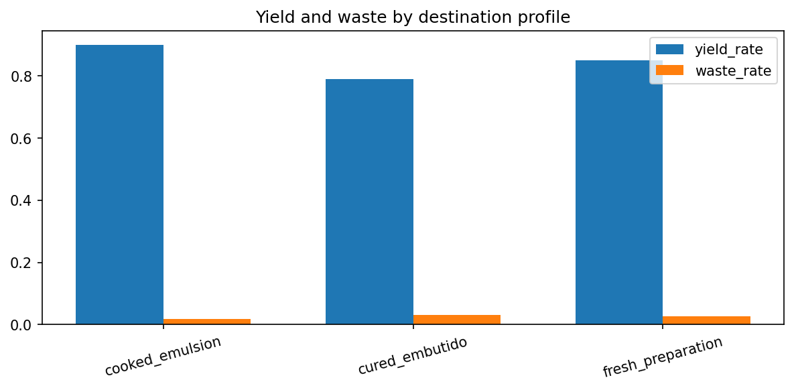
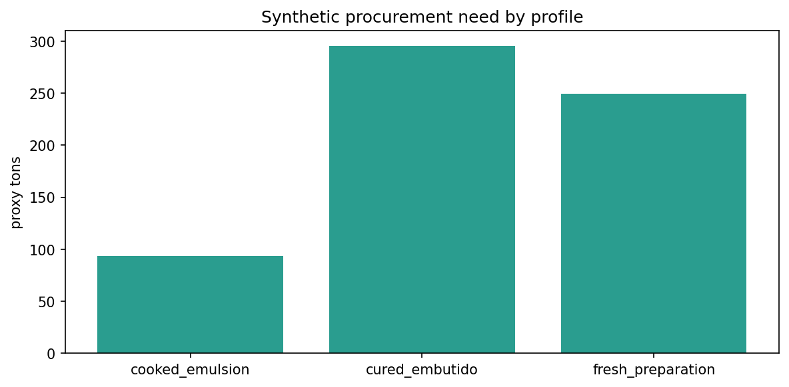
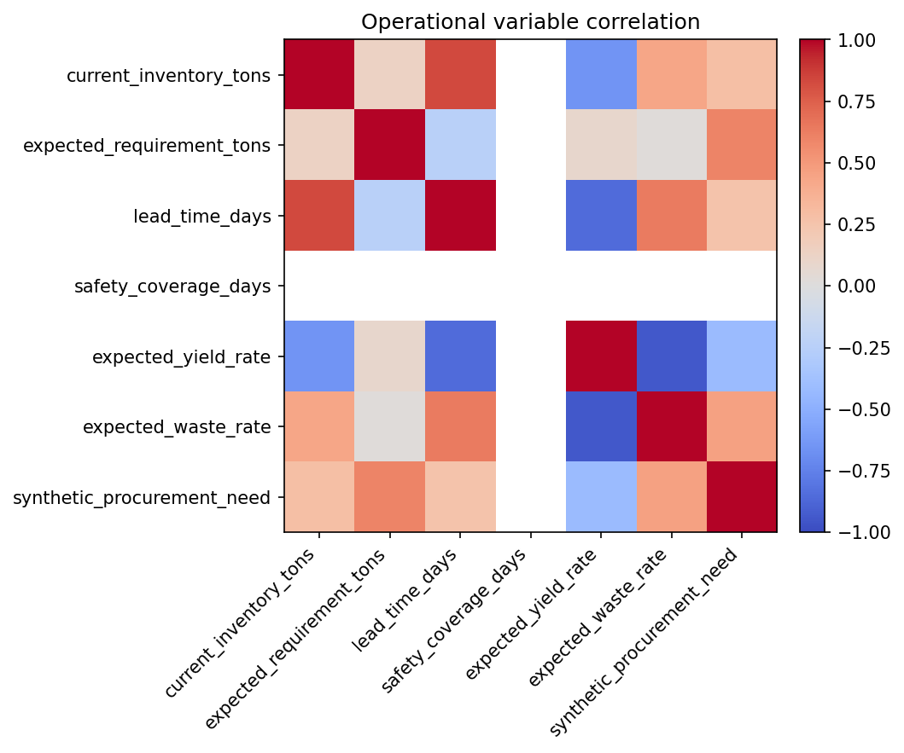
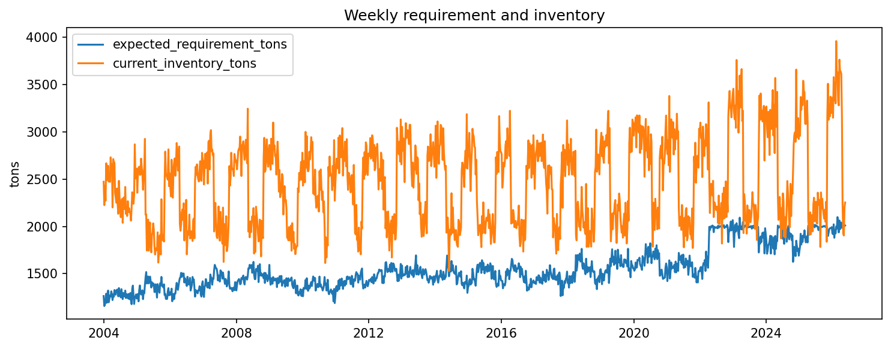

# CU28 mixed_context - Synthetic Plant Layer EDA
Notebook narrativo de auditoria para el scope `mixed_context`.
## Objetivo
Validar de forma plausible la capa operativa sintetica que aproxima inventario, requirement, lead time, yield y waste para la ruta mixed_context.
## Alcance
Este analisis describe la ruta oficial reproducible `mixed_context`. Las senales externas se tratan como contexto/proxy. Las variables internas de planta siguen siendo sinteticas salvo carga posterior de cliente.
## Inputs
- `data/processed/synthetic/plant/synthetic_plant_layer__mixed_context.csv`
- `data/processed/synthetic/plant/synthetic_plant_metadata__mixed_context.json`
- `config/manufacturing_profiles.yaml`
- `docs/simulation_assumptions.md`
- `docs/simulation_data_basis.md`
## Outputs esperados
- `reports/tables/eda/synthetic_layer_summary__mixed_context.csv`
- `reports/tables/eda/synthetic_layer_by_profile__mixed_context.csv`
- `reports/tables/eda/synthetic_layer_variable_ranges__mixed_context.csv`
- `reports/figures/eda/synthetic_requirement_by_profile__mixed_context.png`
- `reports/figures/eda/synthetic_inventory_distribution__mixed_context.png`
- `reports/figures/eda/synthetic_lead_time_by_profile__mixed_context.png`
- `reports/figures/eda/synthetic_yield_waste_by_profile__mixed_context.png`
- `reports/figures/eda/synthetic_procurement_need_by_profile__mixed_context.png`
- `reports/figures/eda/synthetic_layer_correlation__mixed_context.png`
- `reports/figures/eda/synthetic_requirement_inventory_timeseries__mixed_context.png`
## Limitaciones
Este notebook documenta evidencia reproducible del pipeline oficial, pero no sustituye la revision de codigo, la auditoria de datos de origen ni una certificacion operacional de planta.
Code
from pathlib import Path
import json
import numpy as np
import pandas as pd
import matplotlib
matplotlib.use("Agg")
import matplotlib.pyplot as plt
from src.reproducibility.notebook_support import (
detect_temporal_columns,
ensure_eda_dirs,
execution_metadata,
first_valid_temporal_range,
load_source_manifests,
load_tabular_file,
parse_markdown_table,
print_frame,
print_series,
project_root,
read_json,
relative_to_root,
save_figure,
save_table,
sha256_file,
)
import yaml
Output
Code
NOTEBOOK_NAME = "03_synthetic_plant_layer_eda.ipynb"
PROJECT_ROOT = project_root()
SCOPE = globals().get("scope", "mixed_context")
REPORT_DIRS = ensure_eda_dirs()
META = execution_metadata(SCOPE)
FIGURES = []
TABLES = []
print(json.dumps(META, indent=2))
Output
{
"scope": "mixed_context",
"executed_at_utc": "2026-06-17T10:30:06.213200+00:00",
"commit": "b2fc273adf68c17087b4637655067bc80d417fa9"
}
## Carga de datos
Las siguientes celdas cargan los artefactos de entrada y muestran verificaciones intermedias antes de producir tablas y graficas.
Code
synthetic_path = PROJECT_ROOT / "data/processed/synthetic/plant/synthetic_plant_layer__mixed_context.csv"
synthetic_meta_path = PROJECT_ROOT / "data/processed/synthetic/plant/synthetic_plant_metadata__mixed_context.json"
profiles_path = PROJECT_ROOT / "config" / "manufacturing_profiles.yaml"
synthetic_df = pd.read_csv(synthetic_path)
synthetic_df["date"] = pd.to_datetime(synthetic_df["date"], errors="coerce")
synthetic_meta = read_json(synthetic_meta_path)
print(synthetic_df.shape)
print_frame("Synthetic layer preview", synthetic_df.head(10))
Output
(1169, 48)
Synthetic layer preview
date supply_index purchase_price_index demand_index manufacturing_context_profile product_family process_type recipe_profile formulation_class expected_yield expected_waste process_lead_time_days shelf_life_class priority_level cost_sensitivity synthetic_plant_production_volume synthetic_plant_capacity_utilization synthetic_yield_rate synthetic_waste_rate synthetic_raw_material_requirement synthetic_inventory_coverage_days synthetic_inventory_level synthetic_lead_time_days synthetic_procurement_need_pressure synthetic_procurement_need_coverage_gap synthetic_procurement_need_hybrid synthetic_procurement_need_refined synthetic_procurement_need synthetic_planned_orders destination_profile product_family_alias raw_material_id current_inventory_tons expected_requirement_tons lead_time_days safety_coverage_days expected_yield_rate expected_waste_rate unit_purchase_cost shelf_life_days projected_stock_after_lead_time_tons safety_stock_tons purchase_trigger_gap_tons purchase_trigger_label purchase_trigger_proba_heuristic replenishment_gap_tons quantity_optimizer_target_tons baseline_order_quantity_tons
2003-12-29 NaN 100.0 100.000000 cured_embutido cured_embutido curing_maturation fermented_dry_spiced cured 0.79 0.031 11.0 long planned_campaign high 975.000244 0.609375 0.794397 0.029711 1263.812499 13.693405 2472.270827 9 214.866241 275.939099 185.646175 185.646175 214.866241 225.077759 cured_embutido cured_embutido rm_cured_embutido 2472.270827 1263.812499 9 6.0 0.79 0.031 1000.0 28.0 847.369043 1083.267857 235.898814 1 0.554227 0.0 0.0 0.0
2004-01-05 NaN 100.0 100.000000 cured_embutido cured_embutido curing_maturation fermented_dry_spiced cured 0.79 0.031 11.0 long planned_campaign high 891.690161 0.557306 0.792515 0.029648 1158.497109 13.441639 2224.585655 9 226.840282 308.790125 195.968980 195.968980 226.840282 237.620866 cured_embutido cured_embutido rm_cured_embutido 2224.585655 1158.497109 9 6.0 0.79 0.031 1000.0 28.0 735.089371 992.997522 257.908151 1 0.564569 0.0 0.0 0.0
2004-01-12 NaN 100.0 100.000000 cured_embutido cured_embutido curing_maturation fermented_dry_spiced cured 0.79 0.031 11.0 long planned_campaign high 905.355364 0.565847 0.796840 0.032797 1173.445945 14.483791 2427.992220 9 192.526132 192.835122 193.542974 193.542974 192.526132 201.675936 cured_embutido cured_embutido rm_cured_embutido 2427.992220 1173.445945 9 6.0 0.79 0.031 1000.0 28.0 919.276005 1005.810810 86.534804 1 0.521495 0.0 0.0 0.0
2004-01-19 NaN 100.0 100.000000 cured_embutido cured_embutido curing_maturation fermented_dry_spiced cured 0.79 0.031 11.0 long planned_campaign high 939.519423 0.587200 0.799071 0.032601 1214.096896 13.093848 2271.028637 9 251.487295 366.257815 208.884727 208.884727 251.487295 263.439228 cured_embutido cured_embutido rm_cured_embutido 2271.028637 1214.096896 9 6.0 0.79 0.031 1000.0 28.0 710.046913 1040.654482 330.607569 1 0.578762 0.0 0.0 0.0
2004-01-26 NaN 100.0 100.000000 cured_embutido cured_embutido curing_maturation fermented_dry_spiced cured 0.79 0.031 11.0 long planned_campaign high 982.269135 0.613918 0.785877 0.031554 1289.340611 14.482825 2667.613471 9 193.667739 190.781900 193.233509 193.233509 193.667739 202.871798 cured_embutido cured_embutido rm_cured_embutido 2667.613471 1289.340611 9 6.0 0.79 0.031 1000.0 28.0 1009.889828 1105.149095 95.259267 1 0.521536 0.0 0.0 0.0
2004-02-02 NaN 100.0 101.614481 cured_embutido cured_embutido curing_maturation fermented_dry_spiced cured 0.79 0.031 11.0 long planned_campaign high 916.551524 0.572845 0.790282 0.028299 1192.599028 14.605266 2488.318008 9 189.036175 166.499571 192.643037 192.643037 189.036175 198.020120 cured_embutido cured_embutido rm_cured_embutido 2488.318008 1192.599028 9 6.0 0.79 0.031 1000.0 28.0 954.976401 1022.227738 67.251337 1 0.516441 0.0 0.0 0.0
2004-02-09 NaN 100.0 101.614481 cured_embutido cured_embutido curing_maturation fermented_dry_spiced cured 0.79 0.031 11.0 long planned_campaign high 962.114112 0.601321 0.785295 0.030377 1262.378766 14.376407 2592.638655 9 196.365606 185.443362 194.646908 194.646908 196.365606 205.697881 cured_embutido cured_embutido rm_cured_embutido 2592.638655 1262.378766 9 6.0 0.79 0.031 1000.0 28.0 969.580242 1082.038942 112.458701 1 0.525960 0.0 0.0 0.0
2004-02-16 NaN 100.0 101.614481 cured_embutido cured_embutido curing_maturation fermented_dry_spiced cured 0.79 0.031 11.0 long planned_campaign high 1010.509553 0.631568 0.786890 0.029508 1322.075504 13.982842 2640.910423 9 202.624417 204.403160 182.609476 182.609476 202.624417 212.254142 cured_embutido cured_embutido rm_cured_embutido 2640.910423 1322.075504 9 6.0 0.79 0.031 1000.0 28.0 941.099060 1133.207575 192.108515 1 0.542280 0.0 0.0 0.0
2004-02-23 NaN 100.0 101.614481 cured_embutido cured_embutido curing_maturation fermented_dry_spiced cured 0.79 0.031 11.0 long planned_campaign high 913.311500 0.570820 0.787480 0.032739 1197.761368 14.453603 2473.138263 9 189.003937 159.586527 189.654690 189.654690 189.003937 197.986349 cured_embutido cured_embutido rm_cured_embutido 2473.138263 1197.761368 9 6.0 0.79 0.031 1000.0 28.0 933.159361 1026.652601 93.493240 1 0.522751 0.0 0.0 0.0
2004-03-01 NaN 100.0 103.829780 cured_embutido cured_embutido curing_maturation fermented_dry_spiced cured 0.79 0.031 11.0 long planned_campaign high 940.469939 0.587794 0.785771 0.033356 1236.798166 14.165090 2502.765297 9 204.446720 203.995946 196.490606 196.490606 204.446720 214.163050 cured_embutido cured_embutido rm_cured_embutido 2502.765297 1236.798166 9 6.0 0.79 0.031 1000.0 28.0 912.596226 1060.112714 147.516488 1 0.534732 0.0 0.0 0.0
Code
manufacturing_profiles = yaml.safe_load(profiles_path.read_text(encoding="utf-8"))
selected_profile_keys = list((manufacturing_profiles or {}).keys())
print({"profile_count": len(selected_profile_keys), "profiles": selected_profile_keys[:10]})
print(json.dumps({k: synthetic_meta[k] for k in ["environment_name", "time_granularity", "validated_base_horizon_label"] if k in synthetic_meta}, indent=2))
Output
{'profile_count': 5, 'profiles': ['version', 'registry_name', 'selection_key', 'profile_name_key', 'profiles']}
{
"environment_name": "procurement_training_environment",
"time_granularity": "weekly",
"validated_base_horizon_label": "W+1"
}
## Inspeccion inicial
Se revisan shape, columnas, tipos y nulos para dejar claro que esta capa es sintetica y que su funcion es dar contexto operativo reproducible al pipeline mixto.
Code
shape_summary = pd.DataFrame([{"rows": len(synthetic_df), "columns": len(synthetic_df.columns)}])
column_summary = pd.DataFrame({"column": synthetic_df.columns})
print_frame("Shape summary", shape_summary)
print_frame("Column list", column_summary, rows=30)
Output
Shape summary
rows columns
1169 48
Column list
column
date
supply_index
purchase_price_index
demand_index
manufacturing_context_profile
product_family
process_type
recipe_profile
formulation_class
expected_yield
expected_waste
process_lead_time_days
shelf_life_class
priority_level
cost_sensitivity
synthetic_plant_production_volume
synthetic_plant_capacity_utilization
synthetic_yield_rate
synthetic_waste_rate
synthetic_raw_material_requirement
synthetic_inventory_coverage_days
synthetic_inventory_level
synthetic_lead_time_days
synthetic_procurement_need_pressure
synthetic_procurement_need_coverage_gap
synthetic_procurement_need_hybrid
synthetic_procurement_need_refined
synthetic_procurement_need
synthetic_planned_orders
destination_profile
Code
dtype_summary = synthetic_df.dtypes.astype(str).reset_index()
dtype_summary.columns = ["column", "dtype"]
print_frame("Dtype summary", dtype_summary, rows=30)
display(dtype_summary.head(30))
Output
Dtype summary
column dtype
date datetime64[us]
supply_index float64
purchase_price_index float64
demand_index float64
manufacturing_context_profile str
product_family str
process_type str
recipe_profile str
formulation_class str
expected_yield float64
expected_waste float64
process_lead_time_days float64
shelf_life_class str
priority_level str
cost_sensitivity str
synthetic_plant_production_volume float64
synthetic_plant_capacity_utilization float64
synthetic_yield_rate float64
synthetic_waste_rate float64
synthetic_raw_material_requirement float64
synthetic_inventory_coverage_days float64
synthetic_inventory_level float64
synthetic_lead_time_days int64
synthetic_procurement_need_pressure float64
synthetic_procurement_need_coverage_gap float64
synthetic_procurement_need_hybrid float64
synthetic_procurement_need_refined float64
synthetic_procurement_need float64
synthetic_planned_orders float64
destination_profile str
| column |
dtype |
| date |
datetime64[us] |
| supply_index |
float64 |
| purchase_price_index |
float64 |
| demand_index |
float64 |
| manufacturing_context_profile |
str |
| product_family |
str |
| process_type |
str |
| recipe_profile |
str |
| formulation_class |
str |
| expected_yield |
float64 |
| expected_waste |
float64 |
| process_lead_time_days |
float64 |
| shelf_life_class |
str |
| priority_level |
str |
| cost_sensitivity |
str |
| synthetic_plant_production_volume |
float64 |
| synthetic_plant_capacity_utilization |
float64 |
| synthetic_yield_rate |
float64 |
| synthetic_waste_rate |
float64 |
| synthetic_raw_material_requirement |
float64 |
| synthetic_inventory_coverage_days |
float64 |
| synthetic_inventory_level |
float64 |
| synthetic_lead_time_days |
int64 |
| synthetic_procurement_need_pressure |
float64 |
| synthetic_procurement_need_coverage_gap |
float64 |
| synthetic_procurement_need_hybrid |
float64 |
| synthetic_procurement_need_refined |
float64 |
| synthetic_procurement_need |
float64 |
| synthetic_planned_orders |
float64 |
| destination_profile |
str |
Code
null_summary = synthetic_df.isna().mean().reset_index()
null_summary.columns = ["column", "missing_pct"]
null_summary["missing_pct"] = null_summary["missing_pct"].round(4)
print_frame("Null summary", null_summary.sort_values("missing_pct", ascending=False), rows=30)
display(null_summary.sort_values("missing_pct", ascending=False).head(30))
Output
Null summary
column missing_pct
supply_index 0.7596
date 0.0000
purchase_price_index 0.0000
demand_index 0.0000
manufacturing_context_profile 0.0000
product_family 0.0000
process_type 0.0000
recipe_profile 0.0000
formulation_class 0.0000
expected_yield 0.0000
expected_waste 0.0000
process_lead_time_days 0.0000
shelf_life_class 0.0000
priority_level 0.0000
cost_sensitivity 0.0000
synthetic_plant_production_volume 0.0000
synthetic_plant_capacity_utilization 0.0000
synthetic_yield_rate 0.0000
synthetic_waste_rate 0.0000
synthetic_raw_material_requirement 0.0000
synthetic_inventory_coverage_days 0.0000
synthetic_inventory_level 0.0000
synthetic_lead_time_days 0.0000
synthetic_procurement_need_pressure 0.0000
synthetic_procurement_need_coverage_gap 0.0000
synthetic_procurement_need_hybrid 0.0000
synthetic_procurement_need_refined 0.0000
synthetic_procurement_need 0.0000
synthetic_planned_orders 0.0000
destination_profile 0.0000
| column |
missing_pct |
| supply_index |
0.7596 |
| date |
0.0000 |
| purchase_price_index |
0.0000 |
| demand_index |
0.0000 |
| manufacturing_context_profile |
0.0000 |
| product_family |
0.0000 |
| process_type |
0.0000 |
| recipe_profile |
0.0000 |
| formulation_class |
0.0000 |
| expected_yield |
0.0000 |
| expected_waste |
0.0000 |
| process_lead_time_days |
0.0000 |
| shelf_life_class |
0.0000 |
| priority_level |
0.0000 |
| cost_sensitivity |
0.0000 |
| synthetic_plant_production_volume |
0.0000 |
| synthetic_plant_capacity_utilization |
0.0000 |
| synthetic_yield_rate |
0.0000 |
| synthetic_waste_rate |
0.0000 |
| synthetic_raw_material_requirement |
0.0000 |
| synthetic_inventory_coverage_days |
0.0000 |
| synthetic_inventory_level |
0.0000 |
| synthetic_lead_time_days |
0.0000 |
| synthetic_procurement_need_pressure |
0.0000 |
| synthetic_procurement_need_coverage_gap |
0.0000 |
| synthetic_procurement_need_hybrid |
0.0000 |
| synthetic_procurement_need_refined |
0.0000 |
| synthetic_procurement_need |
0.0000 |
| synthetic_planned_orders |
0.0000 |
| destination_profile |
0.0000 |
Code
variables_of_interest = [
"current_inventory_tons",
"expected_requirement_tons",
"lead_time_days",
"safety_coverage_days",
"expected_yield_rate",
"expected_waste_rate",
"synthetic_procurement_need",
]
variable_ranges = synthetic_df[variables_of_interest].agg(["min", "max", "mean"]).transpose().reset_index()
variable_ranges.columns = ["variable", "min", "max", "mean"]
print_frame("Observed ranges", variable_ranges, rows=20)
display(variable_ranges)
Output
Observed ranges
variable min max mean
current_inventory_tons 1529.391999 3958.407347 2471.183813
expected_requirement_tons 1158.497109 2098.820145 1550.134852
lead_time_days 2.000000 9.000000 5.879384
safety_coverage_days 6.000000 6.000000 6.000000
expected_yield_rate 0.790000 0.900000 0.825261
expected_waste_rate 0.018000 0.031000 0.028068
synthetic_procurement_need 15.021012 1055.525357 256.458144
| variable |
min |
max |
mean |
| current_inventory_tons |
1529.391999 |
3958.407347 |
2471.183813 |
| expected_requirement_tons |
1158.497109 |
2098.820145 |
1550.134852 |
| lead_time_days |
2.000000 |
9.000000 |
5.879384 |
| safety_coverage_days |
6.000000 |
6.000000 |
6.000000 |
| expected_yield_rate |
0.790000 |
0.900000 |
0.825261 |
| expected_waste_rate |
0.018000 |
0.031000 |
0.028068 |
| synthetic_procurement_need |
15.021012 |
1055.525357 |
256.458144 |
## Analisis por variable
Las siguientes celdas revisan la plausibilidad operativa de requirement, inventory, lead time, coverage, yield, waste y la senal upstream sintetica.
Code
requirement_summary = synthetic_df.groupby("destination_profile")["expected_requirement_tons"].agg(["count", "mean", "median", "min", "max"]).reset_index()
print_frame("Requirement by destination_profile", requirement_summary, rows=20)
display(requirement_summary)
Output
Requirement by destination_profile
destination_profile count mean median min max
cooked_emulsion 120 1436.220382 1431.428292 1177.884597 1821.785183
cured_embutido 582 1505.230335 1447.689801 1158.497109 2098.820145
fresh_preparation 467 1635.368610 1566.954139 1247.590507 2015.877861
| destination_profile |
count |
mean |
median |
min |
max |
| cooked_emulsion |
120 |
1436.220382 |
1431.428292 |
1177.884597 |
1821.785183 |
| cured_embutido |
582 |
1505.230335 |
1447.689801 |
1158.497109 |
2098.820145 |
| fresh_preparation |
467 |
1635.368610 |
1566.954139 |
1247.590507 |
2015.877861 |
Code
inventory_summary = synthetic_df.groupby("destination_profile")["current_inventory_tons"].agg(["mean", "median", "min", "max"]).reset_index()
print_frame("Inventory by destination_profile", inventory_summary, rows=20)
display(inventory_summary)
Output
Inventory by destination_profile
destination_profile mean median min max
cooked_emulsion 2438.051526 2397.049414 2038.085146 3136.339169
cured_embutido 2836.504438 2790.251384 2196.999267 3958.407347
fresh_preparation 2024.415657 2022.246846 1529.391999 2513.031445
| destination_profile |
mean |
median |
min |
max |
| cooked_emulsion |
2438.051526 |
2397.049414 |
2038.085146 |
3136.339169 |
| cured_embutido |
2836.504438 |
2790.251384 |
2196.999267 |
3958.407347 |
| fresh_preparation |
2024.415657 |
2022.246846 |
1529.391999 |
2513.031445 |
Code
lead_coverage_summary = synthetic_df.groupby("destination_profile")[["lead_time_days", "safety_coverage_days"]].mean().reset_index()
print_frame("Lead time and safety coverage by profile", lead_coverage_summary, rows=20)
display(lead_coverage_summary)
Output
Lead time and safety coverage by profile
destination_profile lead_time_days safety_coverage_days
cooked_emulsion 4.083333 6.0
cured_embutido 9.000000 6.0
fresh_preparation 2.451820 6.0
| destination_profile |
lead_time_days |
safety_coverage_days |
| cooked_emulsion |
4.083333 |
6.0 |
| cured_embutido |
9.000000 |
6.0 |
| fresh_preparation |
2.451820 |
6.0 |
Code
yield_waste_summary = synthetic_df.groupby("destination_profile")[["expected_yield_rate", "expected_waste_rate"]].mean().reset_index()
print_frame("Yield and waste by profile", yield_waste_summary, rows=20)
display(yield_waste_summary)
Output
Yield and waste by profile
destination_profile expected_yield_rate expected_waste_rate
cooked_emulsion 0.90 0.018
cured_embutido 0.79 0.031
fresh_preparation 0.85 0.027
| destination_profile |
expected_yield_rate |
expected_waste_rate |
| cooked_emulsion |
0.90 |
0.018 |
| cured_embutido |
0.79 |
0.031 |
| fresh_preparation |
0.85 |
0.027 |
Code
profile_summary = synthetic_df.groupby("destination_profile").agg(
rows=("destination_profile", "size"),
requirement_mean=("expected_requirement_tons", "mean"),
inventory_mean=("current_inventory_tons", "mean"),
procurement_need_mean=("synthetic_procurement_need", "mean"),
).reset_index()
print_frame("Overall summary by profile", profile_summary, rows=20)
display(profile_summary)
Output
Overall summary by profile
destination_profile rows requirement_mean inventory_mean procurement_need_mean
cooked_emulsion 120 1436.220382 2438.051526 93.772185
cured_embutido 582 1505.230335 2836.504438 295.467633
fresh_preparation 467 1635.368610 2024.415657 249.646137
| destination_profile |
rows |
requirement_mean |
inventory_mean |
procurement_need_mean |
| cooked_emulsion |
120 |
1436.220382 |
2438.051526 |
93.772185 |
| cured_embutido |
582 |
1505.230335 |
2836.504438 |
295.467633 |
| fresh_preparation |
467 |
1635.368610 |
2024.415657 |
249.646137 |
Code
fig, ax = plt.subplots(figsize=(8, 4))
ax.bar(requirement_summary["destination_profile"], requirement_summary["mean"], color="#355c7d")
ax.set_title("Expected requirement by destination profile")
ax.set_ylabel("tons")
FIGURES.append(save_figure(fig, "synthetic_requirement_by_profile__mixed_context.png"))
plt.close(fig)
Output
Figure saved to: C:\Users\Erick Mercado\Documents\a28-cnp-carnico-neuroevolutivas-materia\reports\figures\eda\synthetic_requirement_by_profile__mixed_context.png

Code
fig, ax = plt.subplots(figsize=(8, 4))
ax.hist(synthetic_df["current_inventory_tons"], bins=20, color="#6c5b7b", edgecolor="white")
ax.set_title("Current inventory distribution")
ax.set_xlabel("tons")
FIGURES.append(save_figure(fig, "synthetic_inventory_distribution__mixed_context.png"))
plt.close(fig)
Output
Figure saved to: C:\Users\Erick Mercado\Documents\a28-cnp-carnico-neuroevolutivas-materia\reports\figures\eda\synthetic_inventory_distribution__mixed_context.png

Code
lead_time_plot = synthetic_df.groupby("destination_profile")["lead_time_days"].mean().reset_index()
fig, ax = plt.subplots(figsize=(8, 4))
ax.bar(lead_time_plot["destination_profile"], lead_time_plot["lead_time_days"], color="#c06c84")
ax.set_title("Lead time by destination profile")
ax.set_ylabel("days")
FIGURES.append(save_figure(fig, "synthetic_lead_time_by_profile__mixed_context.png"))
plt.close(fig)
Output
Figure saved to: C:\Users\Erick Mercado\Documents\a28-cnp-carnico-neuroevolutivas-materia\reports\figures\eda\synthetic_lead_time_by_profile__mixed_context.png

Code
fig, ax = plt.subplots(figsize=(8, 4))
width = 0.35
positions = np.arange(len(yield_waste_summary))
ax.bar(positions - width / 2, yield_waste_summary["expected_yield_rate"], width=width, label="yield_rate")
ax.bar(positions + width / 2, yield_waste_summary["expected_waste_rate"], width=width, label="waste_rate")
ax.set_xticks(positions)
ax.set_xticklabels(yield_waste_summary["destination_profile"], rotation=15)
ax.set_title("Yield and waste by destination profile")
ax.legend()
FIGURES.append(save_figure(fig, "synthetic_yield_waste_by_profile__mixed_context.png"))
plt.close(fig)
Output
Figure saved to: C:\Users\Erick Mercado\Documents\a28-cnp-carnico-neuroevolutivas-materia\reports\figures\eda\synthetic_yield_waste_by_profile__mixed_context.png

Code
procurement_need_summary = synthetic_df.groupby("destination_profile")["synthetic_procurement_need"].mean().reset_index()
fig, ax = plt.subplots(figsize=(8, 4))
ax.bar(procurement_need_summary["destination_profile"], procurement_need_summary["synthetic_procurement_need"], color="#2a9d8f")
ax.set_title("Synthetic procurement need by profile")
ax.set_ylabel("proxy tons")
FIGURES.append(save_figure(fig, "synthetic_procurement_need_by_profile__mixed_context.png"))
plt.close(fig)
print_frame("Synthetic procurement need by profile", procurement_need_summary, rows=20)
Output
Figure saved to: C:\Users\Erick Mercado\Documents\a28-cnp-carnico-neuroevolutivas-materia\reports\figures\eda\synthetic_procurement_need_by_profile__mixed_context.png
Synthetic procurement need by profile
destination_profile synthetic_procurement_need
cooked_emulsion 93.772185
cured_embutido 295.467633
fresh_preparation 249.646137

Code
operational_cols = [
"current_inventory_tons",
"expected_requirement_tons",
"lead_time_days",
"safety_coverage_days",
"expected_yield_rate",
"expected_waste_rate",
"synthetic_procurement_need",
]
corr = synthetic_df[operational_cols].corr(numeric_only=True)
fig, ax = plt.subplots(figsize=(7, 6))
image = ax.imshow(corr.values, cmap="coolwarm", vmin=-1, vmax=1)
ax.set_xticks(range(len(corr.columns)))
ax.set_yticks(range(len(corr.index)))
ax.set_xticklabels(corr.columns, rotation=45, ha="right")
ax.set_yticklabels(corr.index)
ax.set_title("Operational variable correlation")
fig.colorbar(image, ax=ax, fraction=0.046, pad=0.04)
FIGURES.append(save_figure(fig, "synthetic_layer_correlation__mixed_context.png"))
plt.close(fig)
Output
Figure saved to: C:\Users\Erick Mercado\Documents\a28-cnp-carnico-neuroevolutivas-materia\reports\figures\eda\synthetic_layer_correlation__mixed_context.png

Code
weekly_profile = synthetic_df.groupby("date")[["expected_requirement_tons", "current_inventory_tons"]].mean().reset_index()
fig, ax = plt.subplots(figsize=(10, 4))
ax.plot(weekly_profile["date"], weekly_profile["expected_requirement_tons"], label="expected_requirement_tons")
ax.plot(weekly_profile["date"], weekly_profile["current_inventory_tons"], label="current_inventory_tons")
ax.set_title("Weekly requirement and inventory")
ax.set_ylabel("tons")
ax.legend()
FIGURES.append(save_figure(fig, "synthetic_requirement_inventory_timeseries__mixed_context.png"))
plt.close(fig)
Output
Figure saved to: C:\Users\Erick Mercado\Documents\a28-cnp-carnico-neuroevolutivas-materia\reports\figures\eda\synthetic_requirement_inventory_timeseries__mixed_context.png

## Interpretacion
`destination_profile` representa destino productivo previsto y no una compra observada. `synthetic_procurement_need` es una senal upstream de presion y no la cantidad final recomendada. La decision final de cantidad aparece despues como `order_quantity_tons`.
Code
TABLES.append(save_table(variable_ranges, "synthetic_layer_variable_ranges__mixed_context.csv"))
TABLES.append(save_table(profile_summary, "synthetic_layer_by_profile__mixed_context.csv"))
TABLES.append(save_table(null_summary, "synthetic_layer_summary__mixed_context.csv"))
RESULT = {
"notebook": NOTEBOOK_NAME,
"tables": TABLES,
"figures": FIGURES,
"findings": [
"The synthetic layer produces plausible operational ranges by destination profile.",
"The upstream signal synthetic_procurement_need behaves as a pressure indicator and not as a final order quantity.",
"Inventory, requirement, lead time, yield and waste remain synthetic unless the customer uploads observed values.",
],
"limitations": [
"This notebook validates plausibility only; it does not convert synthetic variables into observed plant evidence.",
],
}
print(json.dumps(RESULT, indent=2))
Output
Table saved to: C:\Users\Erick Mercado\Documents\a28-cnp-carnico-neuroevolutivas-materia\reports\tables\eda\synthetic_layer_variable_ranges__mixed_context.csv
Table saved to: C:\Users\Erick Mercado\Documents\a28-cnp-carnico-neuroevolutivas-materia\reports\tables\eda\synthetic_layer_by_profile__mixed_context.csv
Showing first 20 rows of 48. Full table saved to: C:\Users\Erick Mercado\Documents\a28-cnp-carnico-neuroevolutivas-materia\reports\tables\eda\synthetic_layer_summary__mixed_context.csv
{
"notebook": "03_synthetic_plant_layer_eda.ipynb",
"tables": [
"reports/tables/eda/synthetic_layer_variable_ranges__mixed_context.csv",
"reports/tables/eda/synthetic_layer_by_profile__mixed_context.csv",
"reports/tables/eda/synthetic_layer_summary__mixed_context.csv"
],
"figures": [
"reports/figures/eda/synthetic_requirement_by_profile__mixed_context.png",
"reports/figures/eda/synthetic_inventory_distribution__mixed_context.png",
"reports/figures/eda/synthetic_lead_time_by_profile__mixed_context.png",
"reports/figures/eda/synthetic_yield_waste_by_profile__mixed_context.png",
"reports/figures/eda/synthetic_procurement_need_by_profile__mixed_context.png",
"reports/figures/eda/synthetic_layer_correlation__mixed_context.png",
"reports/figures/eda/synthetic_requirement_inventory_timeseries__mixed_context.png"
],
"findings": [
"The synthetic layer produces plausible operational ranges by destination profile.",
"The upstream signal synthetic_procurement_need behaves as a pressure indicator and not as a final order quantity.",
"Inventory, requirement, lead time, yield and waste remain synthetic unless the customer uploads observed values."
],
"limitations": [
"This notebook validates plausibility only; it does not convert synthetic variables into observed plant evidence."
]
}
| variable |
min |
max |
mean |
| current_inventory_tons |
1529.391999 |
3958.407347 |
2471.183813 |
| expected_requirement_tons |
1158.497109 |
2098.820145 |
1550.134852 |
| lead_time_days |
2.000000 |
9.000000 |
5.879384 |
| safety_coverage_days |
6.000000 |
6.000000 |
6.000000 |
| expected_yield_rate |
0.790000 |
0.900000 |
0.825261 |
| expected_waste_rate |
0.018000 |
0.031000 |
0.028068 |
| synthetic_procurement_need |
15.021012 |
1055.525357 |
256.458144 |
| destination_profile |
rows |
requirement_mean |
inventory_mean |
procurement_need_mean |
| cooked_emulsion |
120 |
1436.220382 |
2438.051526 |
93.772185 |
| cured_embutido |
582 |
1505.230335 |
2836.504438 |
295.467633 |
| fresh_preparation |
467 |
1635.368610 |
2024.415657 |
249.646137 |
| column |
missing_pct |
| date |
0.0000 |
| supply_index |
0.7596 |
| purchase_price_index |
0.0000 |
| demand_index |
0.0000 |
| manufacturing_context_profile |
0.0000 |
| product_family |
0.0000 |
| process_type |
0.0000 |
| recipe_profile |
0.0000 |
| formulation_class |
0.0000 |
| expected_yield |
0.0000 |
| expected_waste |
0.0000 |
| process_lead_time_days |
0.0000 |
| shelf_life_class |
0.0000 |
| priority_level |
0.0000 |
| cost_sensitivity |
0.0000 |
| synthetic_plant_production_volume |
0.0000 |
| synthetic_plant_capacity_utilization |
0.0000 |
| synthetic_yield_rate |
0.0000 |
| synthetic_waste_rate |
0.0000 |
| synthetic_raw_material_requirement |
0.0000 |
## Limitaciones
La capa sintetica es una decision metodologica declarada del caso de uso. Sirve para reproducibilidad y simulacion controlada, no para afirmar observacion directa de operaciones internas.
## Concluson final
La evidencia visual confirma que la capa sintetica es coherente con el relato oficial: soporte batch/offline, datos externos de contexto y variables operativas sinteticas salvo carga futura de cliente.